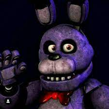
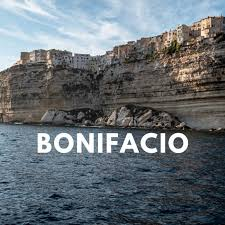

Mi mascota
Bonni
el nombre de mi mascota es bonni por el animatronico de Five nigths at freddys, ademas de que tambien es un diminutivo de bonifacio y normalmetne lo llaman asi las personas mayores y me da risa xd


mi perro tiene 5 años de edad contando en años humanos, su cumpleaños es el 27 de septiembre
nacio en 2017 en tejalpa
.jpg) su pelo es de color blanco con negro y es de estatura mediana y no es de raza el es de barrio
su pelo es de color blanco con negro y es de estatura mediana y no es de raza el es de barrio